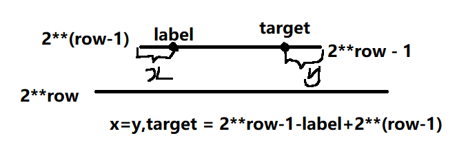

1104. 二叉树寻路
完全二叉树规律
-
$i_{father} = i_{child}/2$
-
所以先找到该节点对称的结点，再利用完全二叉树的规律即可
-
完全二叉树一行的开始是$2^{row - 1}$,结束是$2^{row}-1$
-
下一行的开始是$2^{row}$
-

class Solution {
public:
vector<int> pathInZigZagTree(int label) {
if(label == 1){
return {label};
}
// rowStart 是这一行的开始 2**(row - 1)
// rowStart * 2 是下一行的开始 2**row
// 这一行的结束就是rowStart - 1 = 2**row-1
int row = 1, rowStart = 1;
while(rowStart * 2 <= label){
row += 1;
rowStart *= 2;
}
vector<int> res(row, 0);
while(row){
res[row - 1] = label;
// 找到对称结点除以2,就是父亲节点
label = (rowStart * 2 - 1 - label + rowStart) / 2;
rowStart /= 2;
row -= 1;
}
return res;
}
};